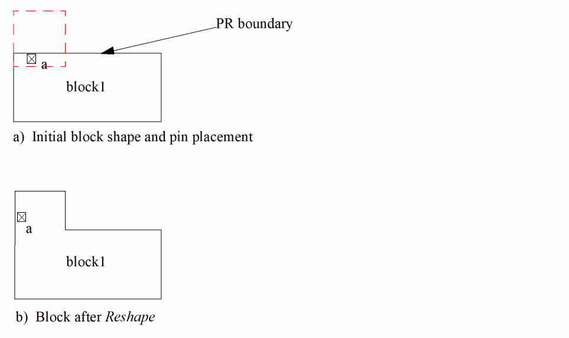
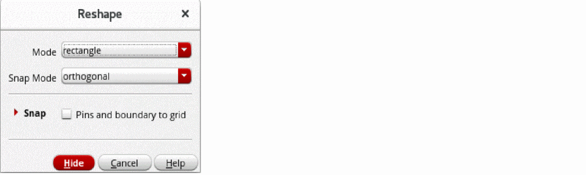
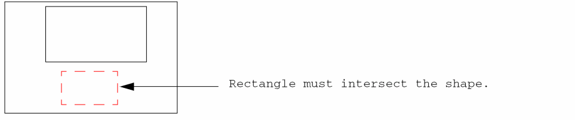
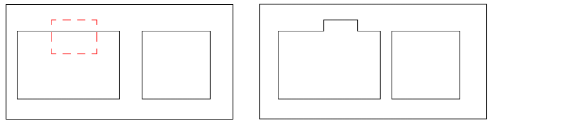

Reshaping an Object in Level-1 Editing Mode
Use the Reshape command in Level-1 Editing mode to reshape a place and route boundary without entering Edit In Place mode. To do this, you have to
- Select the place and route boundary to be reshaped.
- Draw a rectangle in such a way that it intersects at least one of the edges of the boundary or is contained within the place and route boundary.
-
Reshape the boundary with respect to this rectangle.

You can select the shapes to be reshaped either before of after you launch the Reshape command.
Stretched objects are snapped to a grid depending on the block type.
A pin that is assigned a status of firm or locked is not moved. If a grid is not initialized, moved pins are not snapped.
Reshaping a Place and Route Boundary at Level 1
To reshape a block place and route boundary,
-
With Level-1 Editing mode enabled, choose Edit – Advanced – Reshape from the layout window menu bar.
If the Reshape form does not appear automatically, pressF3to display it.
 - Select the polygon or path that you want to reshape.
- To add or remove a rectangle shape, select rectangle as the Mode. To add a polygon to a shape or to reshape a path, select line.
- Select a suitable Snap Mode to specify the shape of line segments.
- In the Snap section, select Pins and boundary to grid to snap the stretched object to a grid depending on the block type.
- Click Hide.
-
Select the place and route boundary to be reshaped.
You are prompted to point to the first corner of the reshape rectangle. -
Point to the first corner
You are prompted to point to the diagonally opposite corner of the reshape rectangle.
If the boundary of the reshape rectangle does not intersect the boundary of the block to be reshaped, the system issues a message.
 -
If you select multiple instances for reshaping, you need to reshape them one by one by using the procedure described above.

Related Topics
Return to top